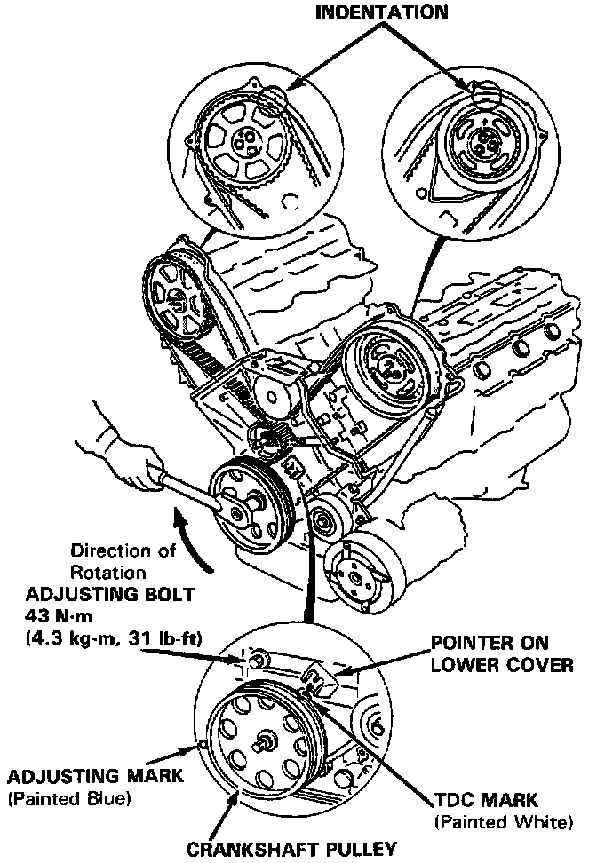

Timing Belt: Adjustments
Tension AdjustmentNOTE: The crankshaft should rotate clockwise when viewed from the pulley side.
CAUTION: Always adjust timing belt tension with the engine cold.
NOTE: Tensioner is spring-loaded to apply proper tension to the belt automatically after making the following adjustment:

1. Set the No.1 piston at TDC compression stroke.
2. Rotate the crankshaft clockwise 9-teeth on camshaft pulley (The blue mark on crankshaft pulley should match the pointer on lower cover).
3. Loosen the adjusting bolt to create tension on timing belt.
4. Tighten the adjusting bolt.